2026年7月14日，QuestMobile发布上半年AI应用报告。数据出来的那一刻，我知道很多人又会只记住一个数字——
豆包月活3.82亿，断层第一，同比增长172.1%。
同一张表里，千问1.67亿，DeepSeek 1.30亿。豆包一个顶后面好几家加起来。
但如果你只记住"3.82亿"这个数字，等于什么都没看懂。
我花了一整周拆完这份报告和字节的全套布局之后，得出了一个可能让你不舒服的判断：
豆包不是字节做一个"聊天机器人"试水。它是字节在AI时代重新卡位的入口级产品。
字节赌的不是"又一个AI助手"的市场份额。它赌的是：在AI重新定义互联网入口的窗口期，用规模优势抢占"对话即办事"的超级入口位。
要理解这个判断，得先理解字节这家公司是怎么发家的，以及AGI对它的底层逻辑意味着什么。
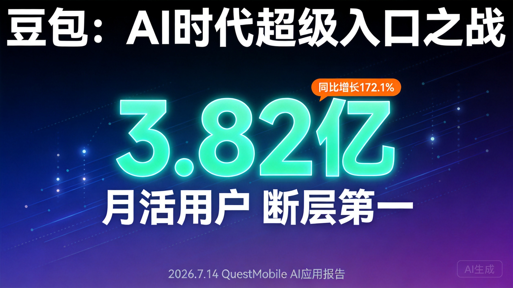
字节跳动的所有生意——抖音、今日头条、TikTok——底层只做了一件事：用推荐算法，把人类生产的内容分发出去。
内容越丰富，推荐越精准。推荐越精准，用户越沉浸。用户越沉浸，广告越值钱。广告越值钱，飞轮越转。
这是过去十年字节估值冲到约3000亿美元的根本。
但AGI的出现，给这台精密运转的机器埋了一颗雷。
当AI能无限、免费、高质量地生成内容时，"分发人类内容"这件事本身的稀缺性还存在吗？
内容不再稀缺。那"谁更会分发内容"的护城河，是不是就被抽掉了？
字节必须回答这个问题。豆包，就是它的答案。
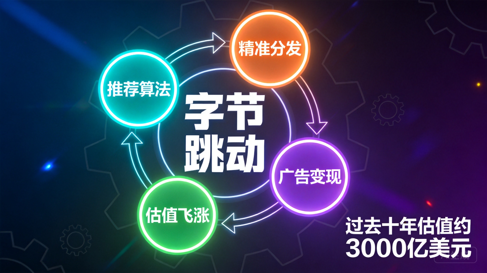
上一期分析阶跃星辰时，我提过一句话：大模型公司的活法不止一种。豆包的打法，很多人总结为"流量派"——免费、烧钱、靠抖音导流、用投流冷启动。
这个说法对，但浅。
更深的真相是：字节在做一个身份升级——从"分发内容"升级为"分发意图（服务）"。
以前你在抖音刷到一条好物视频，点进去买。未来你直接在豆包说一句"帮我选个敏感肌洗面奶，200以内今天发货"，豆包自己比价、推荐、下单、全程在对话框里闭环。
内容的地位，从"被消费的对象"变成了"被调度的资源"。
这不是产品体验的小修小补，是入口形态的换代：
谁占住这个入口，谁就握住下一代互联网的"总开关"。
豆包要的不是"又一个AI助手"，它要成为你日常决策的默认选项。这才是它和阶跃星辰、DeepSeek真正不一样的地方：阶跃赌终端，DeepSeek赌模型，豆包赌入口。
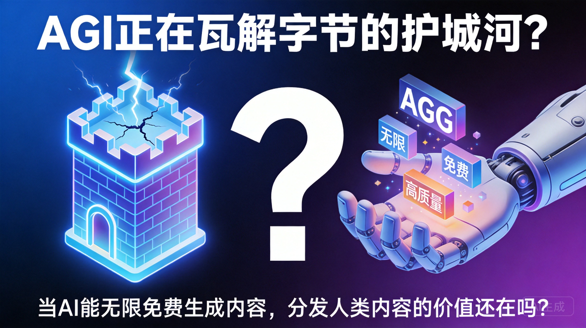
高盛在2026年给出过一套分析框架，核心判断是："得AI超级入口者得天下"，并且明确指出"入口优势不等于模型最强，而在于能否在用户做决策的'关键时刻'成为默认选项，并完成商业闭环"。
判断一个产品是不是超级入口，我给它定了三个硬标准。拿豆包逐项对账：
3.82亿月活是什么概念？
| 应用 | 2026年H1月活 | 备注 |
|---|---|---|
| 淘宝 | 约4亿 | 电商第一 |
| 豆包 | 3.82亿 | AI应用第一 |
| 美团 | 约3亿 | 本地生活第一 |
| 腾讯元宝 | 5735万 | AI应用第二梯队 |
豆包已经超过了美团、滴滴的月活规模，无限逼近淘宝。在国内AI产品里，它把竞品甩开了一个身位——腾讯元宝同期只有5735万月活，一个豆包差不多顶五个元宝。
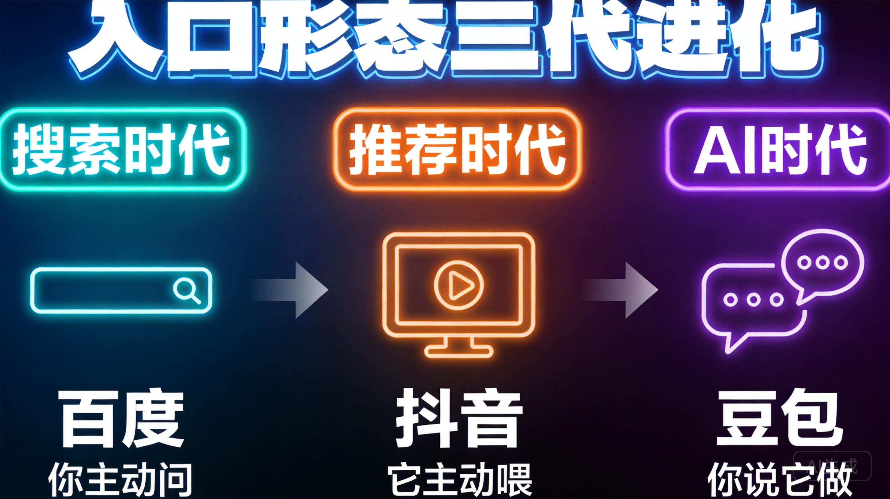
豆包日均Token消耗量国内第一。这不是一个"偶尔打开看看"的数据。上面跑着超过800万个智能体（Agent），说明用户不是来问两句就走，而是在上面"养"自己的数字员工。
日均Token消耗约120万亿，两年增长超1000倍。
三条全过。
结论：豆包已经是微信之后的"第二个超级入口"。
它不再止于回答问题，而是在接管"从需求到交易"的全链路。
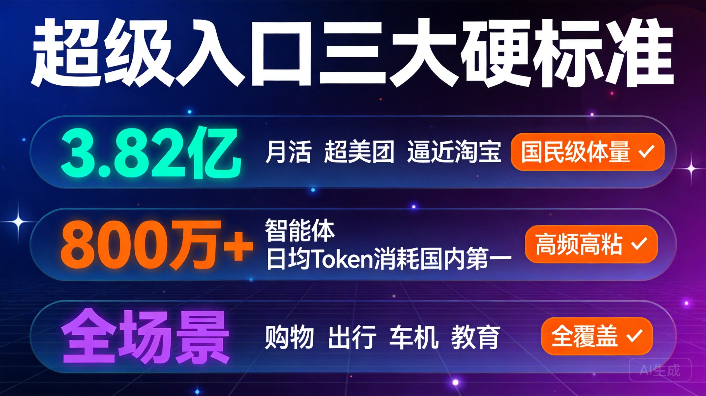
OpenAI从GPT开始，先做出世界上最好的对话模型，再用ChatGPT这个App触达用户，然后尝试做硬件（传闻中的AI手机）。逻辑是：模型能力是入口的前提。
Google类似——先有Gemini模型，再做App集成。
字节从抖音的流量池出发，先用分发优势把用户灌进豆包，再用规模换模型迭代的飞轮。逻辑是：用户规模是入口的前提。
腾讯类似——微信导流元宝，元宝再接入自研混元模型。
两种路径谁先跑通"入口→收入"闭环，会直接决定中美AI公司的估值逻辑差异。
美国路径的优势在于模型能力天花板更高，ChatGPT全球月活已达9亿+，是真正的全球化产品。但它的劣势是——模型能力再强，如果没有和交易场景深度绑定，就只是一个"问答工具"，离"超级入口"还差一步。
中国路径的优势在于入口建设速度极快，3.82亿月活只用了不到两年。但劣势也很明显——如果模型能力被追平，分发优势能不能沉淀成真正的壁垒？
高盛把字节列为"系统级入口领跑者"，评价是：目前唯一在系统层+内容层同时构建AI代理的公司，短期内几乎没有对手。这个评价，放在中美两个市场都成立。
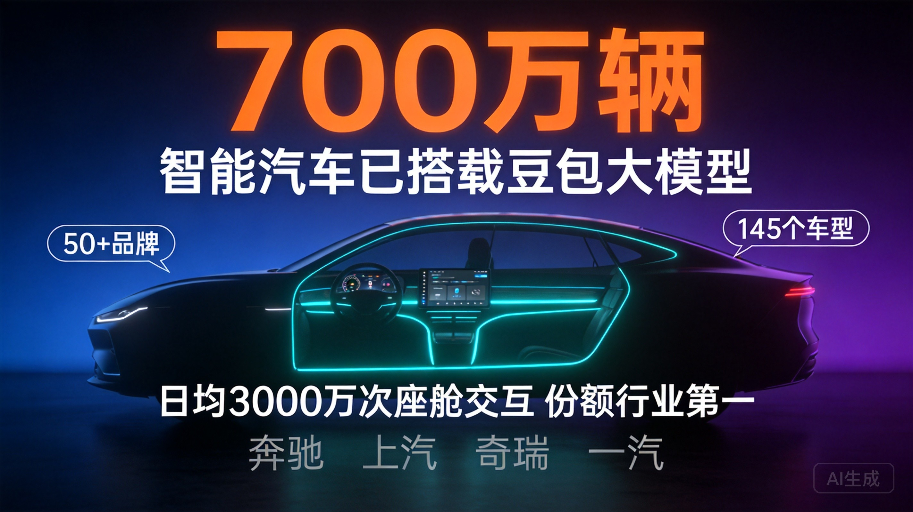
很多人看豆包只看一个App。但作为系列分析，我始终强调要看结构。上一期阶跃星辰的"AI Infra → AI Device → AI Service"是一个结构。这一期豆包也有自己的结构——字节已经把"模型—平台—应用—硬件"四层跑通了：
| 层 | 载体 | 作用 |
|---|---|---|
| 模型层 | 豆包大模型 | 底座能力 |
| 平台层 | 扣子Coze（智能体工厂，800万+ Agent）+ 火山引擎（B端云） | 火山引擎在中国公有云大模型调用量份额46.4%，第一 |
| 应用层 | 豆包App + 各类智能体 | 触达C端 |
| 硬件层 | 努比亚M153 AI手机（联合中兴）、豆包智能眼镜（首批约10万台出货准备） | 把豆包变成"无处不在"的底层系统 |
注意这套结构和上一期讲的阶跃星辰是同一个thesis的两面：阶跃的软硬一体闭环，字节用"模型—平台—应用—硬件"从分发端往下打了一遍。一家从产品往上爬，一家从流量往下扎，终点都是"AI+终端/入口"。
这是2026年中国大模型最值得看清的一条主线。
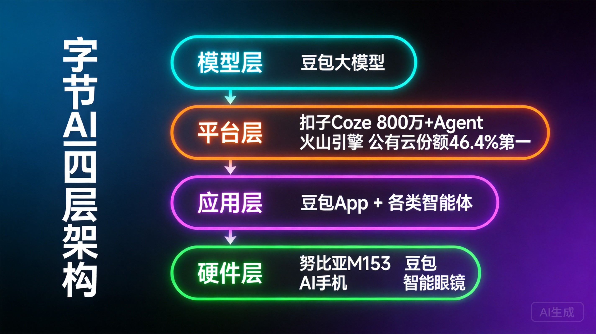
把三期摆在一起，中国大模型牌桌上的"三种活法"就清楚了：
| 派系 | 代表 | 赌注 | 核心动作 |
|---|---|---|---|
| 流量/分发派 | 豆包（字节） | 入口层 | 用规模换心智，用免费换习惯，赌"谁占住入口谁通吃" |
| 产品/终端派 | 阶跃星辰 | AI+硬件原生终端 | 发布STEPX Neo首款AI手机，卡"港股IPO前的资本叙事" |
| 技术/基建派 | DeepSeek | 模型层/开源基建 | 2026年7月14日传出融资500亿元，抬高国产基座估值天花板 |
对投资人真正该问的问题是：中国AI的价值，最终accrual（沉淀）在哪一层？
模型层的窗口正在收窄。水木资本唐劲草的判断是：未来最具成长性的机会更多来自应用层+基础层，纯模型层的窗口期在收。DeepSeek 500亿融资也在倒逼估值逻辑切换——从"短期商业化营收"转向"国产技术自主、开源生态话语权、国家级AI基础设施价值"等长期战略资产属性。
三家赌的不是同一件事，是同一件事的不同切面：价值到底落在哪一层。这就是为什么"三种活法"值得作为一个系列追更——它帮你建立一张可以反复套用的分析坐标系。
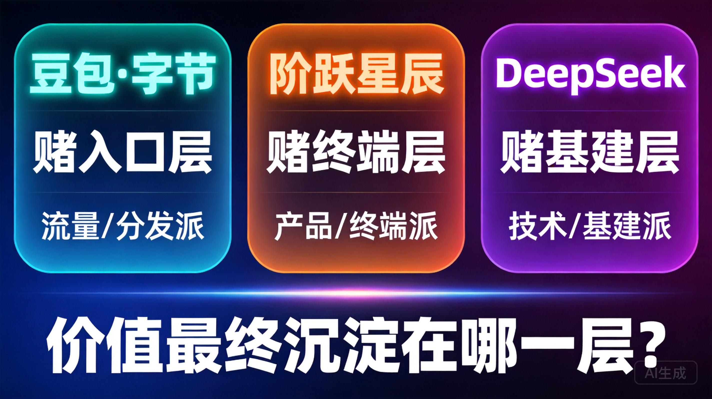
阶跃的资本信号是"港股IPO前夜"，清晰可讲。豆包不上市（字节是私有公司），所以它的资本故事换了一种写法：用主业利润补贴，换一个入口。
这笔账才是对投资人最有看头的。数字很刺眼：
2026年5月，豆包开始收费（68/200/500三档），"豆包付费"热搜阅读超3亿——这是从"免费养规模"转向"验证付费"的拐点信号。
但关键判断是：字节算的不是"豆包单品盈利"，而是"用AI守住抖音/TikTok的入口价值、并向电商与本地生活导流"。
豆包每天亏的那几千万，是字节为下一个十年买的"入口保险"。只要抖音/TikTok的流量价值能从"分发内容"升级为"分发一切"，这笔期权就值回票价。
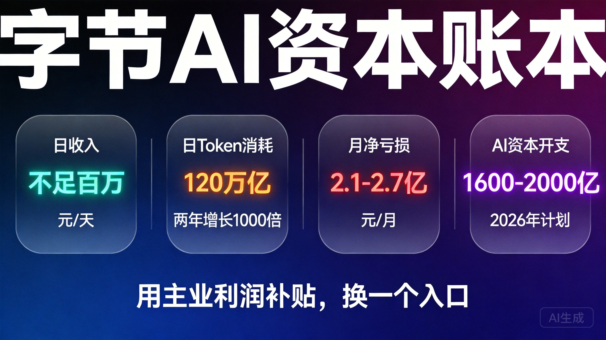
讲完逻辑，必须泼冷水。这几个点是下注前绕不开的：
深度使用占比上，豆包27.5%，DeepSeek 30%，Kimi 26.1%。广度第一，深度略逊。入口被用了，但不一定被"深度用"。
豆包的入口优势，很大程度来自字节既有流量"灌"出来。一旦各家模型能力被追平，分发优势能不能沉淀成真正壁垒？这是最大问号。
超级入口 = 掌握用户意图 + 交易 + 数据。数据合规与反垄断的达摩克利斯之剑始终悬着。
ChatGPT全球月活9亿+，豆包3.82亿主要在中国大陆。如果TikTok在美国持续受限，豆包的全球化路径在哪里？这是一个绕不开的地缘政治变量。
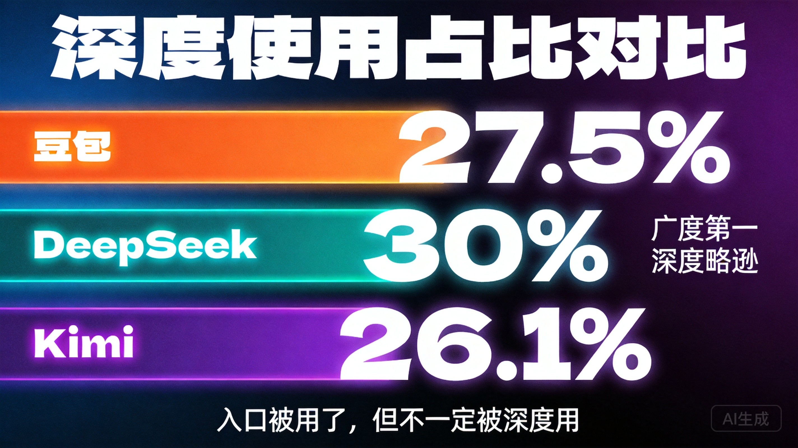
最后给一个赛道级的判断，逻辑链如下：
判断一：AI时代的"超级入口"不会超过三个。
逻辑链：用户不会在超过3个AI助手之间频繁切换（参考浏览器市场Chrome+Safari+Edge三家合计85%+份额）。中国市场的三个位置，豆包已占一席。
判断二：价值最终沉淀在"入口+交易闭环"层，而非纯模型层。
逻辑链：模型能力趋于同质化（开源追赶速度远快于闭源迭代速度） → 纯模型层的溢价窗口收窄 → 价值向能完成交易闭环的应用层迁移 → 豆包"一句话购物"是这个趋势的最早验证。
判断三：中美AI公司的估值逻辑将在2026-2027年出现结构性分化。
逻辑链：美国走"模型→App→全球化"路径，估值锚定全球用户规模和技术领先；中国走"分发→入口→交易"路径，估值锚定国内商业闭环深度。两条路径的天花板和折现方式完全不同。
把这张图刻进脑子里。你再看任何一家中国AI公司的动作，都能先问一句——"它在赌哪一层？"
这比追每一个热点数字，值钱得多。
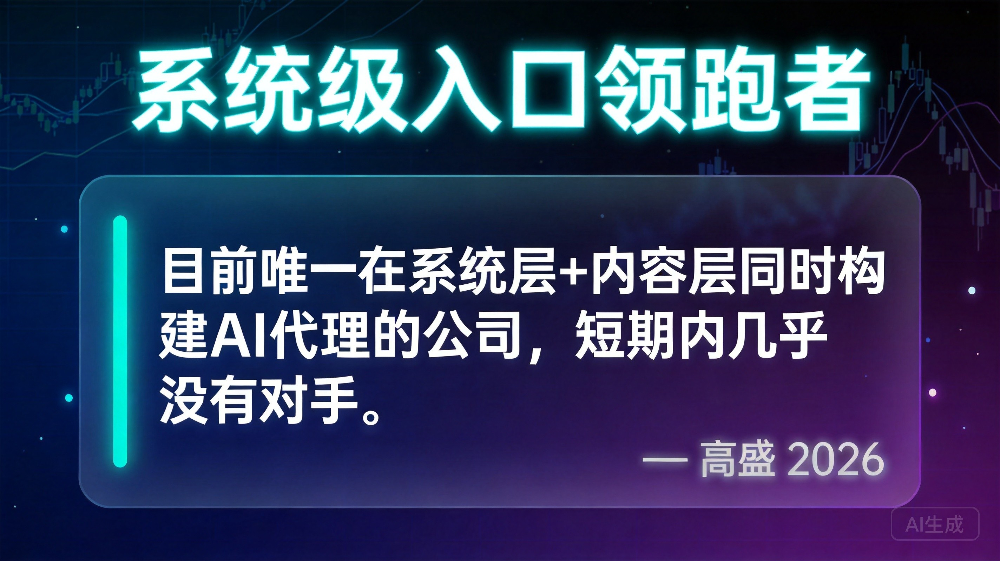
别只盯着"3.82亿月活"这个热闹数字。
要看字节在赌什么：AI时代的入口一旦被豆包占住，抖音/TikTok的流量价值就能从"分发内容"升级为"分发一切"——这是它数千亿私有估值里最关键的一笔期权。
阶跃赌终端、DeepSeek赌基建、豆包赌入口。三种活法，赌的是同一件事的不同切面：价值到底落在哪一层。
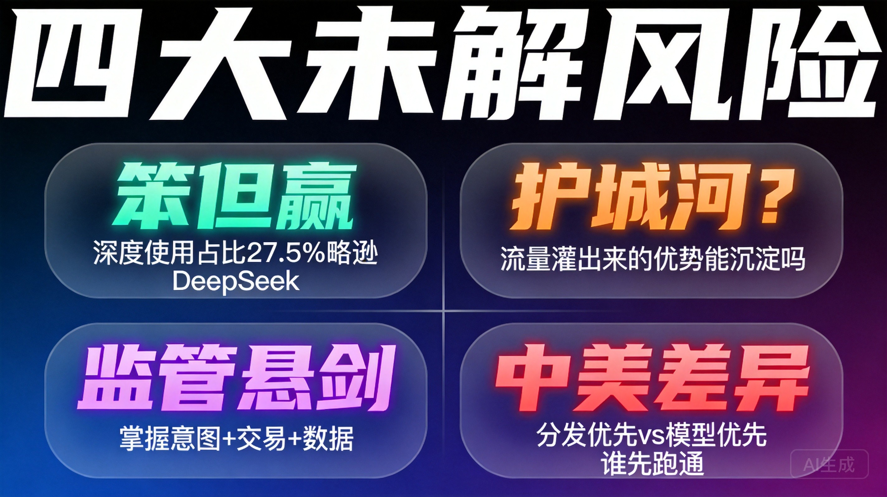
小K爱研究 · 大模型牌桌众生相 · 031 · 2026.07.14